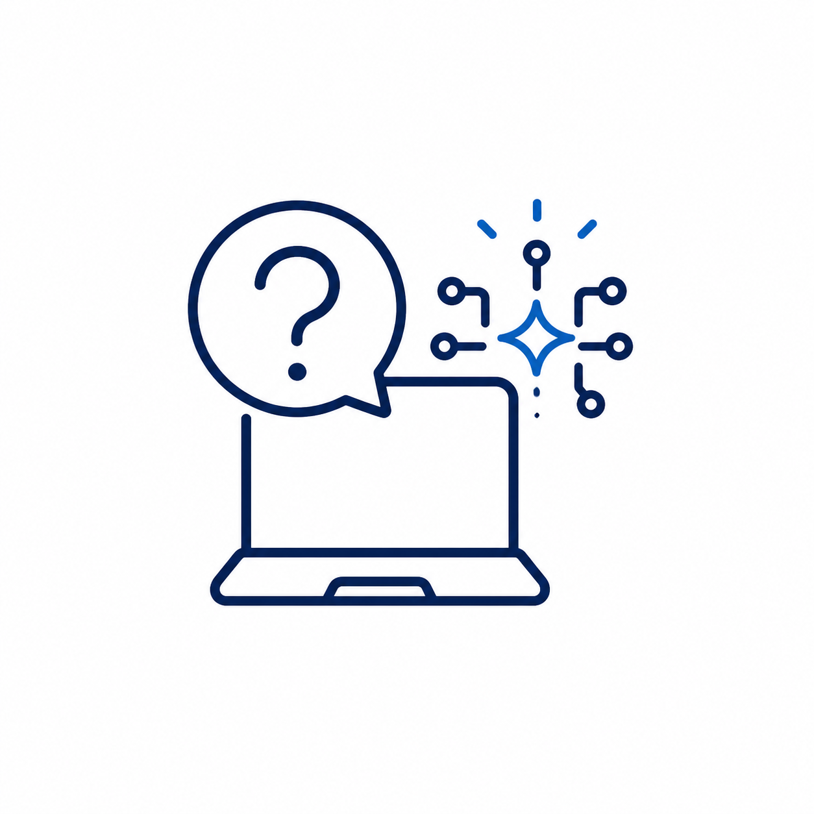
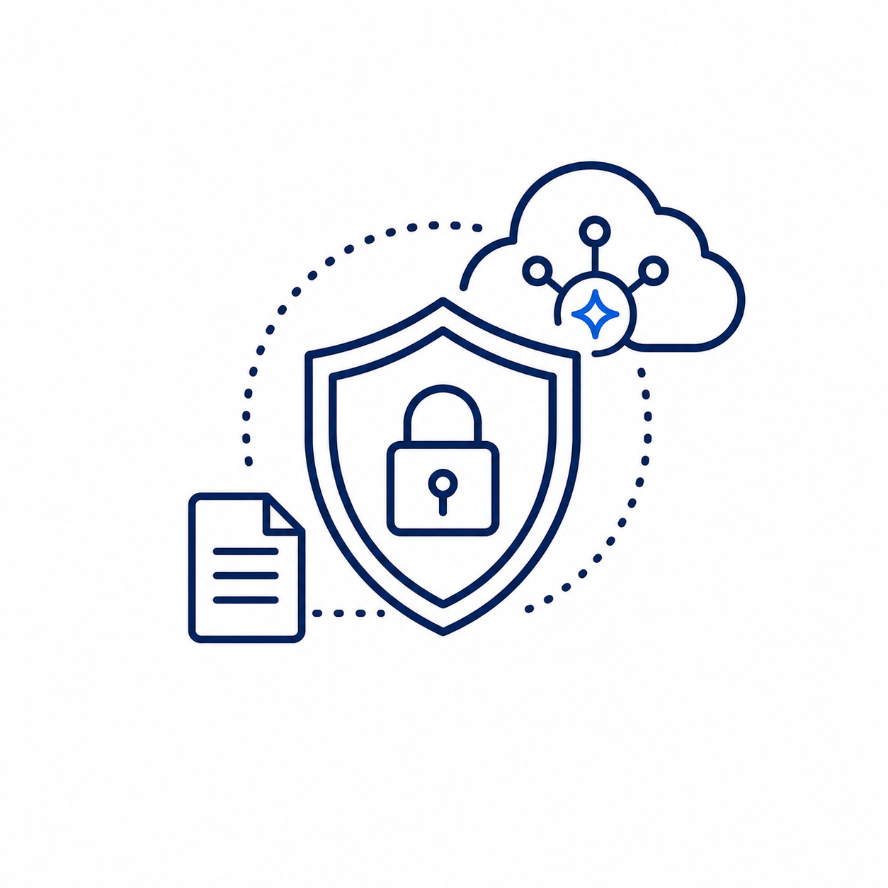
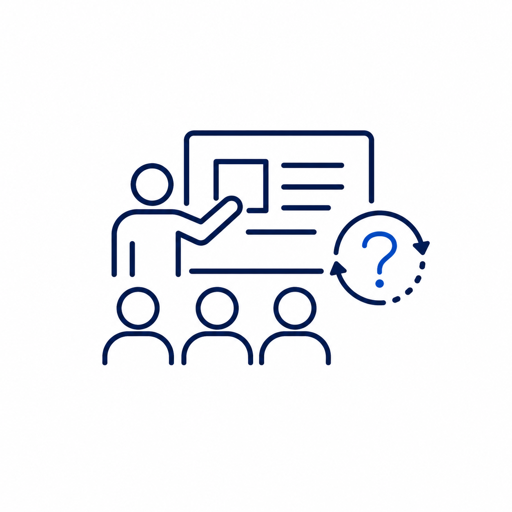

何から手をつけるべきかが明確になりました
AIを使いたい気持ちはあっても、何から始めればいいかわからず止まっていました。業務で使う場面と注意点が整理され、研修後の一歩が見えました。
人手不足・事務作業・情報漏洩の不安を整理し、AIを現場で使える業務改善へ。
AIツールを増やすのではなく、現場の仕事を減らすための導入順序・社内ルール・実務活用まで一緒に整えます。
無料AI診断を受ける相談したからといって、すぐに契約する必要はありません。
現場が忙しく、今いる社員に業務が集中している。

ChatGPTを触ってみたけれど、自社業務への活かし方が見えない。

社員に使わせたい一方で、個人情報や機密情報の入力が不安。

研修を受けても、その場限りで終わってしまうのではないか。
その不安は、AIに詳しくないからではありません。始める順番と、社内で安全に使うルールがまだ整っていないだけです。
まずは無料で、あなたの会社のどの業務がAIで減らせるかを確認しましょう。人手不足・情報漏洩対策・導入優先度を整理します。
情報漏洩対策と社内ルール作成まで扱います。
AI化すべき業務と、人が担当すべき業務を整理します。
明日から使えるプロンプトと業務ワークで学びます。
研修後も相談でき、現場への定着を支援します。
会社規模・対象部署・支援範囲によって最適な進め方が変わるため、料金は個別にご提案しています。
お問い合わせください
AIの基礎、ChatGPT・Gemini活用、情報漏洩対策、社内利用ルール、業務改善ワークまでを一日で整理します。
お問い合わせください
営業・事務・採用・マーケティングの業務を棚卸しし、AI化すべき業務と導入順序を可視化します。
お問い合わせください
月1回の定例MTGで、AI活用相談、業務改善提案、プロンプト作成、最新AI情報の共有まで継続支援します。
困ったことや活用アイデアを気軽に相談できます。
実務で使える型を共有し、随時アップデートします。
質問は専用チャットで受け付け、専門家が丁寧に回答します。
最新AI活用事例や改善のヒントを定期的にお届けします。
いきなりツールを触るのではなく、不安を減らし、安全なルールを整え、自社業務に落とし込む順番で進めます。
AIで何ができるのか、得意・不得意を学びます。
入力OK/NGの基準と社内利用ルールを整えます。
基本操作とプロンプトの型を身につけます。
AIで減らせる業務を洗い出します。
メール、議事録、資料作成などに当てはめます。
研修後の進め方と改善計画を作ります。
会社の生産性を上げ、利益を改善したい方
部下の業務負担を減らし、チームを強くしたい方
事務作業を効率化し、顧問業務に集中したい方
現場と事務のムダを減らしたい方
AIを使いたい気持ちはあっても、何から始めればいいかわからず止まっていました。業務で使う場面と注意点が整理され、研修後の一歩が見えました。
ChatGPTを使うのが不安でしたが、ルール作りから相談でき、安心して活用するための進め方がわかりました。
どの業務をAIで減らせるか、導入時に注意すべき情報漏洩リスク、研修・診断・顧問のどれから始めるべきかを整理します。
法人向けAI研修は、社労士と連携して助成金活用を前提にした進め方も相談できます。対象可否や申請条件は個別に確認します。
AIに入力してよい情報・禁止情報の整理、社内利用ルール、プロンプト運用、必要に応じたツール選定まで扱います。
運送業、建設業、不動産、士業、製造業、美容業、リフォーム業など、人手不足と事務負担が大きい業種に対応します。
可能です。研修後はAI導入診断や月額AI顧問につなぎ、現場での定着・改善提案・プロンプト作成まで伴走します。
無料AI診断・個別相談で、御社に合った改善の第一歩をご提案します。
無料AI診断を受けるオンライン相談OK / 強引な営業はしません / ご相談は何度でも無料